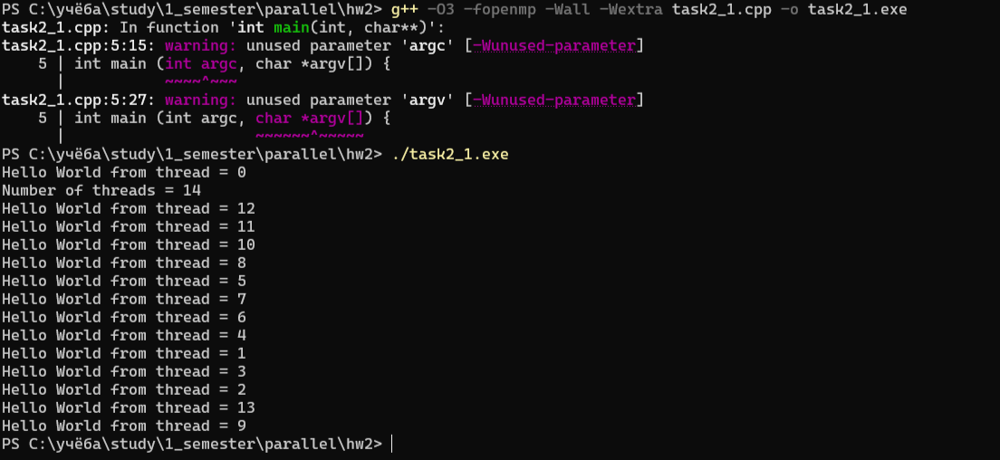
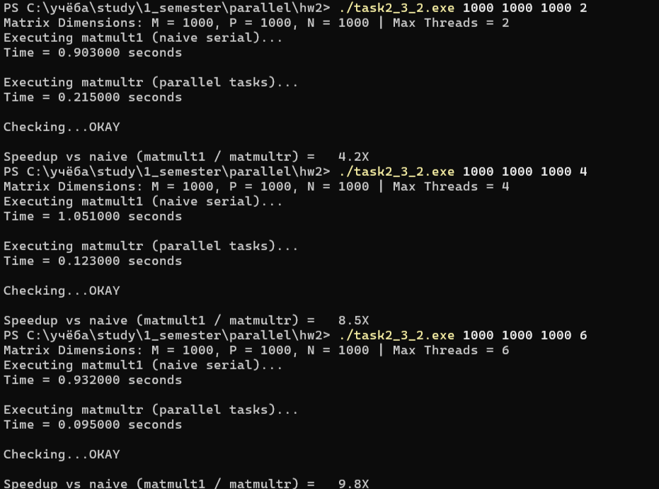

Learning Log & How I Proceeded:
I worked through the LLNL OpenMP tutorial by Blaise Barney, focusing on shared-memory multi-threading in C/C++. Since my primary background is in full-stack software development rather than low-level HPC, learning to parallelize code via pragmas instead of managing raw worker threads or event loops was a fresh perspective. I set up my local environment on Windows with MinGW GCC (passing -fopenmp) and stepped through the fundamental concepts: fork-join thread pool models, variable scoping, and work-sharing loops.
Key Concepts Mastered:
#pragma omp parallel and joins back after the region ends.shared vs private): Misconfiguring variable scope is the fastest route to subtle race conditions. Global or loop control variables must be explicitly marked private(tid, i) or declared locally inside the parallel block, while read-only or accumulator matrices are passed as shared.schedule(static, chunk) vs dynamic): In static scheduling, the compiler partitions iterations in fixed chunks ahead of time, which has virtually zero overhead for balanced workloads like matrix multiplication. dynamic handles unbalanced workloads via a shared work queue at the cost of runtime synchronization.task, taskwait, single): Discovered how task parallelism allows recursive divide-and-conquer algorithms to run in parallel without requiring rigid loop bounds, provided dependencies are gated by barriers.omp_get_thread_num(), omp_get_num_threads(), omp_set_num_threads(), and wall-clock benchmarking using omp_get_wtime().Encountered Roadblocks & Solutions:
printf() outputs from threads appeared interleaved and out of order. At first it looked like a bug, but it is just threads concurrently competing for standard output (stdout).OMP_PLACES=cores produced runtime warnings (libgomp: Affinity not supported) because MinGW's GCC wrapper on Windows does not support POSIX thread affinity flags. I had to let the Windows kernel scheduler manage core assignments.malloc().Tips for Fellow Students:
.exe, otherwise the window closes instantly upon termination.private will instantly corrupt multi-threaded loops.printf calls inside timed parallel sections; terminal I/O completely serializes execution and ruins benchmark numbers.Tutorial Sample Run (Hello World & Thread Scoping):
PS C:\учёба\study\1_semester\parallel\hw2> g++ -O3 -fopenmp -Wall -Wextra task2_1.cpp -o task2_1.exe
PS C:\учёба\study\1_semester\parallel\hw2> ./task2_1.exe
Hello World from thread = 0
Number of threads = 14
Hello World from thread = 12
Hello World from thread = 11
Hello World from thread = 10
Hello World from thread = 8
Hello World from thread = 5
Hello World from thread = 7
Hello World from thread = 6
Hello World from thread = 4
Hello World from thread = 1
Hello World from thread = 3
Hello World from thread = 2
Hello World from thread = 13
Hello World from thread = 9

Figure: Verification of thread pool initialization and non-deterministic scheduling output across logical cores.
For this task, I compiled the provided omp_mm.c on Windows using MinGW-w64 g++ -O3 -fopenmp -Wall -Wextra (_OPENMP = 202111).
Setting OMP_PLACES=cores and OMP_PROC_BIND=close immediately threw warnings from MinGW runtime (libgomp: Affinity not supported on this configuration), so the thread affinity had to rely on the standard Windows OS scheduler.
Stack overflow encounter: When increasing dimensions to 500 as recommended, the executable silently crashed on launch. Since Windows limits the default thread stack to just 1 MB, allocating three 500x500 double arrays locally (~6 MB) blew up the stack before reaching main(). To fix this without messing with linker flags, I rewrote array allocation in heap using malloc() with flat 1D indexing, which worked cleanly.
PS C:\учёба\study\1_semester\parallel\hw2> .\benchmark.ps1
Testing p = 1... Runs: 0.057, 0.056, 0.052, 0.055, 0.053 s -> Median: 0.055 s
Testing p = 2... Runs: 0.026, 0.030, 0.028, 0.027, 0.030 s -> Median: 0.028 s
Testing p = 4... Runs: 0.019, 0.020, 0.019, 0.023, 0.023 s -> Median: 0.020 s
Testing p = 6... Runs: 0.022, 0.021, 0.017, 0.017, 0.016 s -> Median: 0.017 s
| Threads (p) | Median Time (s) | Speedup (T1 / Tp) | Efficiency |
|---|---|---|---|
| 1 | 0.055 | 1.00x | 100.0% |
| 2 | 0.028 | 1.96x | 98.2% |
| 4 | 0.020 | 2.75x | 68.8% |
| 6 | 0.017 | 3.24x | 53.9% |
Scheduling & Scaling observations:
The loop splits work via schedule(static, 10). Out of 500 rows, blocks of 10 rows are handed out sequentially (thread 0 gets rows 0-9, thread 1 gets 10-19, and so on). Because each row has the same computational cost, work distribution is perfectly balanced.
We do get a speedup (peaking at ~3.24x on 6 cores), but scaling falls off noticeably past 2 threads. The entire calculation takes only 17-55 ms, so thread synchronization and fork/join overhead become significant. On top of that, accessing matrix B column-wise triggers lots of cache misses, causing threads to bottleneck on memory access.
Overview & Algorithm Analysis:
Allocate2DArray() (contiguous row buffer
with row pointer table in 2DArray.h),
completely eliminating the stack memory limits
encountered in Exercise 2.2.
matmultr divides matrices into quadrants
($2 \times 2$ block partition) until the submatrix
footprint drops below
GRAIN = 32768 ($\approx 256\text{ KB}$),
where it switches to matmultleaf. This
keeps active data within L2/L3 cache lines.
#pragma omp taskwait barrier.
PS C:\учёба\study\1_semester\parallel\hw2> .\task2_3.exe 500 500 500
Matrix Dimensions: M = 500 P = 500 N = 500
Execute matmult1
Time = 0.096000 seconds
Execute matmultr
Time = 0.055000 seconds
Checking...OKAY
Speedup = 1.7X
PS C:\учёба\study\1_semester\parallel\hw2> .\task2_3.exe 1000 1000 1000
Matrix Dimensions: M = 1000 P = 1000 N = 1000
Execute matmult1
Time = 0.908000 seconds
Execute matmultr
Time = 0.331000 seconds
Checking...OKAY
Speedup = 2.7X
PS C:\учёба\study\1_semester\parallel\hw2> .\task2_3.exe 1500 1500 1500
Matrix Dimensions: M = 1500 P = 1500 N = 1500
Execute matmult1
Time = 4.930000 seconds
Execute matmultr
Time = 5.131000 seconds
Checking...OKAY
Speedup = 1.0X
| Matrix Dimensions ($M \times P \times N$) | Naive Time (matmult1) |
Recursive Time (matmultr) |
Algorithmic Speedup | Verification |
|---|---|---|---|---|
| $500 \times 500 \times 500$ | 0.096 s | 0.055 s | 1.7× | OKAY |
| $1000 \times 1000 \times 1000$ | 0.908 s | 0.331 s | 2.7× | OKAY |
| $1500 \times 1500 \times 1500$ | 4.930 s | 5.131 s | 1.0× | OKAY |
Deliverable Observations & Performance Analysis:
matmult1, the
column-strided traversal of matrix $B$ ($B[k][j]$)
triggers non-stop cache misses once the matrix exceeds
cache capacity. By breaking the matrix into sub-blocks
smaller than GRAIN = 32768,
matmultr ensures that working submatrices
fit entirely into L2/L3 cache, maximizing spatial and
temporal locality.
Testing the serial recursive code against the standard 3-loop implementation using 2DArray.h provided in the worksheet.
Note on initial code bug: In the starter template, the helper function dabs() had a logic bug: return (d < 0.0 ? d : (-d));, which returned negative values for positive floats and made result verification fail on correct matrices. Fixed it to d >= 0.0 ? d : -d (or fabs).
| Matrix Size (M x N x P) | Naive 3-loop (matmult1) | Recursive (matmultr) | S_algorithmic (T_naive / T_recur) |
|---|---|---|---|
| 500 x 500 x 500 | 0.096 s | 0.055 s | 1.75x |
| 1000 x 1000 x 1000 | 0.908 s | 0.331 s | 2.74x |
| 1500 x 1500 x 1500 | 4.930 s | 5.131 s | 0.96x |
Why recursive is faster at 1000x1000: Even without OpenMP, the recursive algorithm is ~2.74x faster solely due to CPU cache behavior. The naive loop jumps through matrix B by columns with big strides (8 KB per jump for N=1000), thrashing L1/L2 caches. The recursive approach cuts matrices down until blocks fit into GRAIN = 32768 (~256 KB), allowing the CPU to reuse cached submatrices in fast memory.
At 1500x1500 the advantage disappears (0.96x). Odd matrix sizes make recursive splitting uneven, recursion call overhead stacks up, and the working set exceeds L3 cache capacity, hitting main memory bandwidth limits either way.
To parallelize matmultrec(), we wrap the root call in #pragma omp parallel with #pragma omp single, then spawn subproblems via #pragma omp task.
Because pairs of calls update the same quadrants of matrix C (e.g., both A00*B00 and A01*B10 write to C00), running all 8 tasks at once creates a blatant data race. To avoid this, execution is split into two phases of 4 independent tasks separated by #pragma omp taskwait.
What happens without #pragma omp single?
If we omit #pragma omp single, every active thread executes the root call and starts recursively spawning tasks. With 6 threads, we get 6 identical task trees running simultaneously. They overwrite each other's accumulations in matrix C (causing CheckResults to fail) and choke the CPU with task scheduling overhead.
Scaling Benchmarks (1000 x 1000):
Baseline naive time fixed to single-thread run: T_naive = 0.909 s.
| Threads (p) | Time (s) | Speedup vs Recur-Serial (0.327 / Tp) | Total Speedup vs Naive (0.909 / Tp) |
|---|---|---|---|
| 1 | 0.327 s | 1.00x | 2.78x |
| 2 | 0.215 s | 1.52x | 4.23x |
| 4 | 0.123 s | 2.66x | 7.39x |
| 6 | 0.095 s | 3.44x | 9.57x |

Figure: Relative parallel speedup of recursive matrix multiplication on up to 6 threads.
Combining cache-friendly recursion with task parallelization drops runtime from 0.909 s down to 0.095 s, giving an overall ~9.6x speedup on 6 cores.